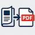
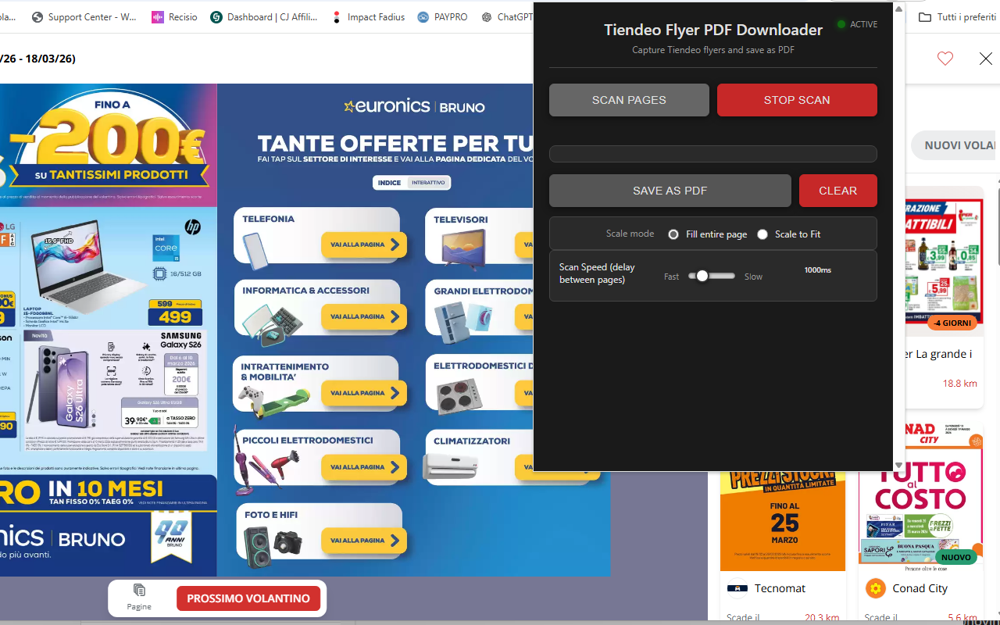
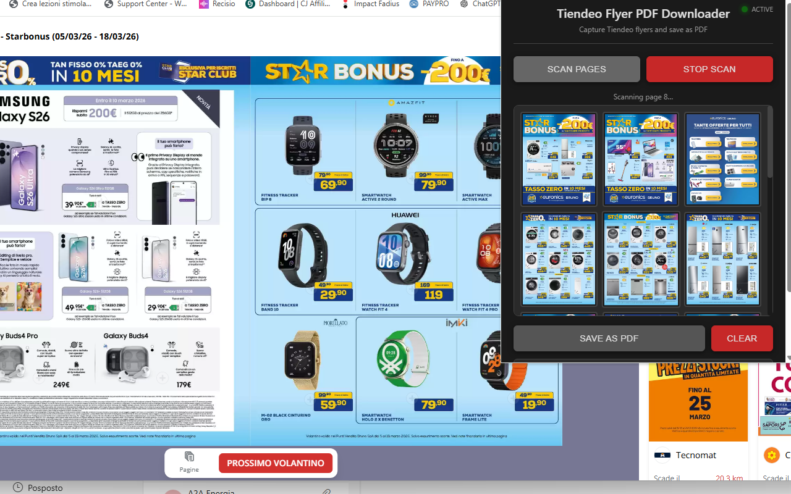

Tiendeo Flyer to PDF Downloader
Save any Tiendeo flyer as a high-quality PDF document 📄. With Tiendeo Flyer to PDF Downloader, you can capture every page of any store flyer on Tiendeo and export them into a single, beautifully formatted PDF file — perfect for offline browsing, comparing deals, or keeping a personal archive of your favorite promotions.
No complicated software, no manual screenshots, no tedious copy-pasting. The extension handles everything automatically — it detects the flyer images displayed in the Tiendeo viewer, advances to the next page, and repeats until the entire flyer is captured. When the scan is complete, it compiles all pages into a single PDF document ready for download.
Automatic page detection is powered by smart image recognition 🎯. The extension identifies the high-resolution flyer images served by Tiendeo's viewer (via shopfully.cloud CDN) and captures them directly — ensuring crisp, clean results without any UI overlays or navigation bars polluting your PDF.
Automatic page turning uses Tiendeo's native keyboard navigation to flip through the flyer seamlessly. The extension simulates arrow key presses to advance pages, waits for the new page to load, captures the image, and moves on — working reliably across all Tiendeo regional sites regardless of language.
Export options give you full control over the final PDF. The extension automatically detects each page's orientation — portrait for covers and landscape for double-page spreads — and adjusts the PDF page layout accordingly. Choose between Fill Entire Page (cover mode, edge-to-edge) or Scale to Fit (contain mode, preserving proportions) to get exactly the result you want.
📋 How to Use
- Install the extension from the Chrome Web Store.
- Navigate to any flyer on Tiendeo (tiendeo.it, tiendeo.fr, tiendeo.com, etc.).
- Open the flyer viewer so you can see the flyer pages.
- Click the extension icon to open the control panel.
- Click "Scan Pages" to start capturing pages automatically.
- Watch the live preview as pages are captured one by one.
- Click "Stop Scan" at any time if you want to end the scan early.
- Adjust the scale mode if needed (Fill Entire Page or Scale to Fit).
- Click "Save as PDF" to generate and download your file.
📷 Screenshots


✨ Key Features
- Automatic Page Capture — Detects and captures high-resolution flyer images directly from Tiendeo's viewer
- Smart Image Detection — Identifies flyer pages from shopfully.cloud CDN with multiple fallback strategies
- Automatic Page Turning — Uses native keyboard navigation to flip through the entire flyer hands-free
- Auto Orientation — Automatically sets each PDF page to portrait or landscape based on the image dimensions
- Two Scale Modes — Fill Entire Page (edge-to-edge) or Scale to Fit (preserve proportions)
- WebP to JPEG Conversion — Automatically converts WebP images to JPEG for maximum PDF compatibility
- Adjustable Scan Speed — Set delay between page captures (500ms–3000ms) for slow connections or large flyers
- Live Preview — Watch captured pages appear in real time inside the extension popup
- Stop & Resume — Stop scanning at any time; captured pages are preserved for PDF creation
- Duplicate Detection — Automatically stops when repeated pages are detected (end of flyer)
- Persistent Storage — Scanned pages are saved across popup reopens, so you never lose your progress
- Progress Indicator — Real-time progress bar and page counter during PDF creation
- Works on All Tiendeo Sites — Supports every regional Tiendeo domain worldwide
- Clean Interface — Compact, modern dark-themed popup with intuitive controls
🎯 Perfect For
- Saving store flyers for offline deal browsing
- Comparing promotions across different stores
- Archiving weekly flyers before they expire
- Sharing deals with family and friends
- Building a personal collection of favorite promotions
- Printing flyer pages for in-store shopping
- Keeping records of seasonal sales and offers
- Reading flyers on tablets and e-readers that support PDF
⚙️ Supported Sites
- tiendeo.it (Italy)
- tiendeo.fr (France)
- tiendeo.com (USA)
- tiendeo.es (Spain)
- tiendeo.de (Germany)
- tiendeo.co.uk (United Kingdom)
- tiendeo.pt (Portugal)
- tiendeo.nl (Netherlands)
- tiendeo.be (Belgium)
- tiendeo.at (Austria)
- tiendeo.pl (Poland)
- tiendeo.se (Sweden)
- tiendeo.dk (Denmark)
- tiendeo.no (Norway)
- tiendeo.fi (Finland)
- tiendeo.com.br (Brazil)
- tiendeo.com.ar (Argentina)
- tiendeo.com.mx (Mexico)
- tiendeo.com.co (Colombia)
- tiendeo.cl (Chile)
- tiendeo.com.pe (Peru)
- tiendeo.com.au (Australia)
- tiendeo.co.za (South Africa)
- tiendeo.co.in (India)
💡 Tips for Best Results
- Open the flyer viewer first — make sure you can see the flyer pages before clicking Scan
- Don't close the popup during scanning — the extension needs the popup open to receive page images
- Increase the scan speed slider (towards "Slow") if pages appear missing or partially loaded
- Use "Fill Entire Page" for edge-to-edge flyer pages that look great when printed
- Use "Scale to Fit" if you want to preserve exact proportions with white margins
- Click "Clear" before scanning a new flyer to remove previously captured pages
- Use a stable internet connection to ensure flyer images load completely before capture
🔒 Privacy & Security
- Works entirely in your browser — no uploads to external servers
- Your flyers and images stay private on your computer
- No account required
- No data collection, analytics, or tracking
With Tiendeo Flyer to PDF Downloader, saving store flyers has never been easier. Whether you're hunting for the best deals, archiving promotions before they expire, or simply want an offline copy of your favorite flyers, this extension gives you professional PDF results with just a few clicks. No technical knowledge needed — everything works right in your browser. 🛒
⬇️ Download from Chrome Web Store